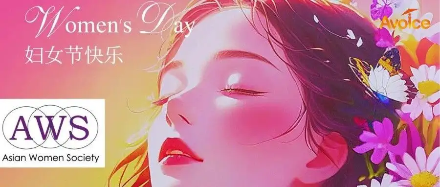
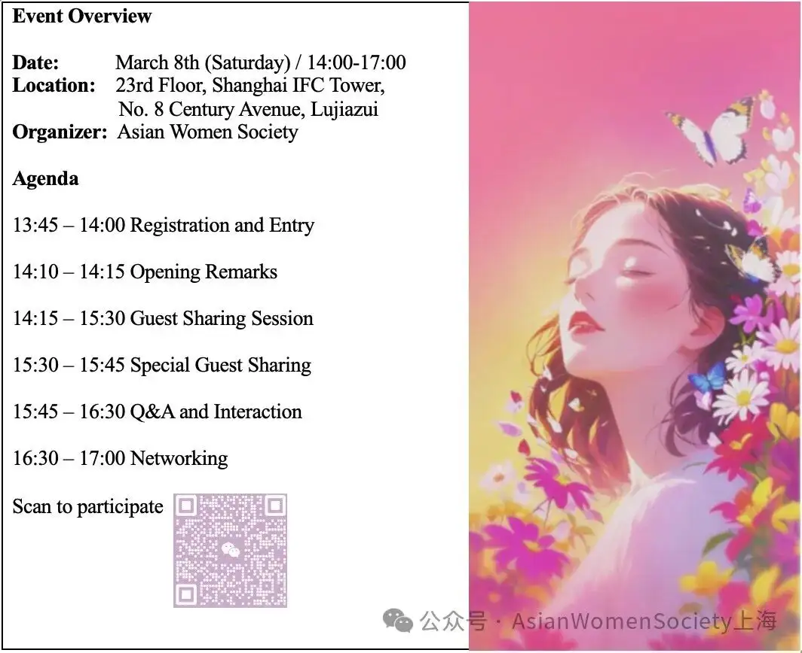
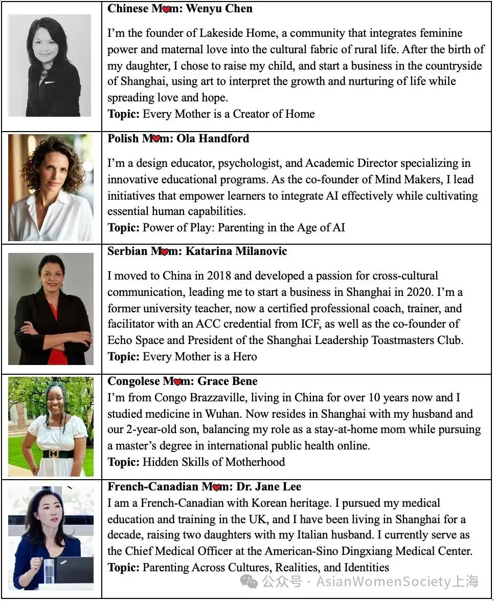
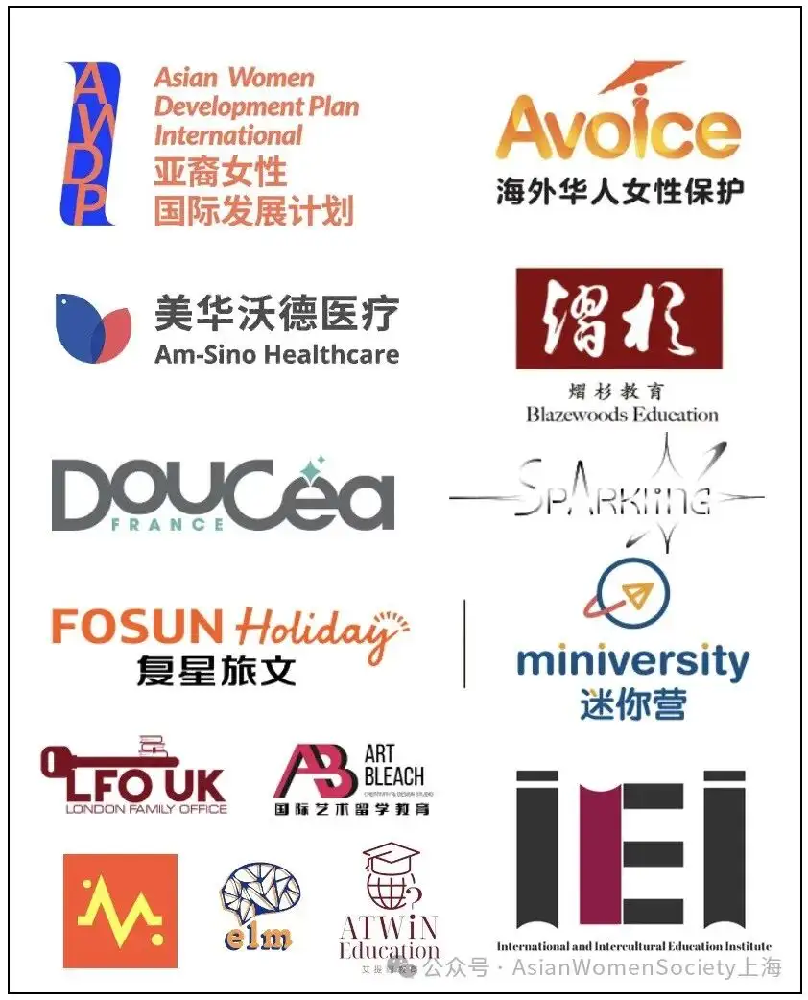
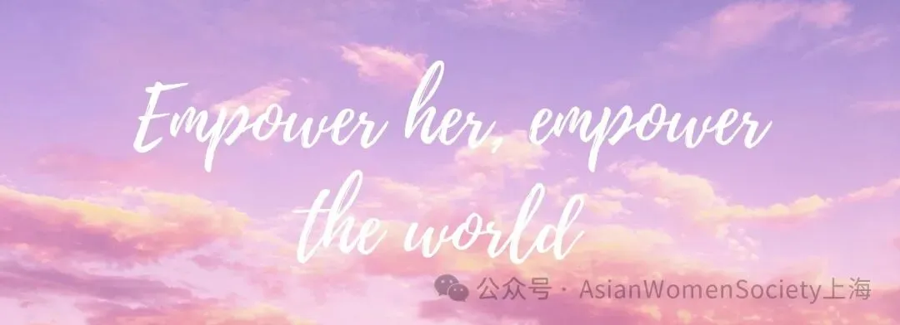

以下文章来源于AsianWomenSociety上海 ，作者Kirby小可爱

AWS是一个专注于多元、融合、包容和平等的女性平台。AWS致力于促进性别平等的领导力和影响力，凝聚各行各业的优秀女性，碰撞思想力量、激发更多可能性。



International Women's Day (IWD), celebrated on March 8, is a global tribute to women’s achievements and a call to action for gender equality. Its roots trace back to the early 20th century, born from the labor and suffrage movements.
In 1908, 15,000 women marched in New York City, demanding better working conditions and voting rights. Inspired by this, Clara Zetkin
proposed an International Women’s Day at the 1910 Socialist Women’s Conference. The first IWD was celebrated in 1911 across Europe, uniting women in their fight for equality.
The date March 8 was cemented in 1917 when Russian women struck for “Bread and Peace,” sparking a revolution. By 1975
, the United Nations officially recognized IWD, turning it into a global movement.
Today, IWD honors women’s progress while reminding us of the work still needed to achieve true equality. It’s a celebration of resilience, a tribute to history, and a promise for a more inclusive future.
In this season of strength and warmth,
Asian Women Society (AWS) is organizing a special International Women's Day panel namely “The Dual Brilliance of Motherhood and Leadership”.
Mother: Not a Label, but a Legacy of Love
Mother is not merely a label; it is a legacy of love and responsibility. She brings new life into the family and dedicates her entire existence to nurturing and guiding that life, imparting the strength to grow and the warmth of love.
Yet, the role of a mother extends far beyond this. She embodies multiple identities—in the workplace, she can be a trailblazing female leader, writing her own legend with wisdom and courage; at home, she tends to every corner with meticulous care and gentle warmth, turning the house into a haven of comfort. Her presence not only broadens the perspective of life but also reveals the infinite possibilities of women thriving in multiple roles.
A mother is both a guardian of life and a pursuer of dreams. Her greatness lies in her ability to face the world’s challenges with resilience while nurturing every inch of her family’s foundation with a tender heart. She is the perfect blend of strength and gentleness, a timeless and moving chapter in the story of life.

Supporting Units:

